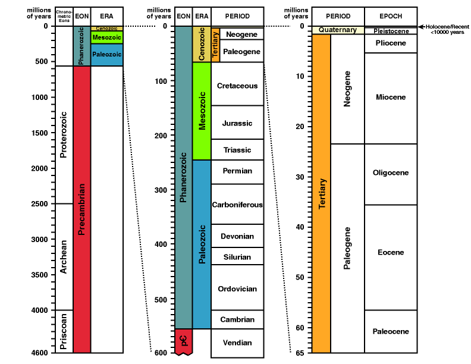

Geologische Zeitskala
Copyright © 1996-1997 von
Andrew MacRae
{kind=link}

Wenige Diskussionen in der Geologie können stattfinden, ohne Bezug auf geologische Zeit zu nehmen. Geologische Zeit wird oft in zwei Formen diskutiert:
- Relative time ("chronostratisch") -- Unterteilungen der Erdgeologie in einer bestimmten Reihenfolge basierend auf relativen Altersbeziehungen (am häufigsten vertikale/stratigraphische Position). Diese Unterteilungen erhalten Namen, die meisten davon können weltweit erkannt werden, in der Regel auf der Grundlage von Fossilien.
- Absolute time ("chronometrisch") -- numerische Altersangaben in "Millionen von Jahren" oder einer anderen Messgröße. Diese werden am häufigsten durch radiometrische Datierungsmethoden an geeigneten Gesteinstypen ermittelt.
Es ist wichtig zu erkennen, dass sich die auf die Zeitskala angewandten Daten ändern können und tun dies tatsächlich, wenn neue Informationen über die Unterteilung oder Korrelation relativer Zeiten oder neue Messungen absoluter Zeit verfügbar werden. Seit dem späten 18. Jahrhundert gab es Überarbeitungen der relativen Zeitskala. Die numerisch kalibrierte geologische Zeitskala wurde seit etwa den 1930er Jahren kontinuierlich verfeinert (z. B. Holmes, 1937), obwohl sich die Größe der Änderungen bei jeder Revision im Laufe der Jahrzehnte verkleinert hat (siehe Abb. 1.5 und 1.6 von Harland et al.) und zuvor einige numerische Schätzungen verfügbar waren (oft jedoch für die gesamte Skala als Ganzes und nicht für ihre einzelnen Unterteilungen).
Zusätzlich hat jede datierte Grenze, wie bei jeder guten wissenschaftlichen Messung, eine damit verbundene Unsicherheit, die als "+/- X Millionen Jahre" ausgedrückt wird. Diese können aus praktischen Gründen nicht im Diagramm enthalten sein, finden sich aber bei Harland et al., 1990, zusammen mit einer detaillierten Beschreibung der Geschichte früher vorgeschlagener Zeitskalen sowie der Terminologie, Methodik und Daten, die bei der Erstellung dieser geologischen Zeitskala eine Rolle spielen.
Wegen der ständigen Verfeinerung sollten keine der in diesem Diagramm dargestellten Werte als endgültig betrachtet werden, auch wenn einige seit langem nicht signifikant verändert wurden und sehr gut eingeschränkt sind (z. B. wurde die Grenze zwischen dem Kreide- und dem Tertiär über Jahrzehnte hinweg bei 65 +/- 1 Ma festgelegt und unzählige Male getestet, wobei fast alle Datierungen irgendwo zwischen 64 und 66 Millionen Jahren liegen). Die Gesamtdauer und die relative Länge dieser großen geologischen Intervalle werden sich wahrscheinlich kaum ändern, aber die genauen Zahlen können sich aufgrund neuer Daten etwas „wackeln".
Dieses geologische Zeitskaliert basiert auf Harland et al., 1990, jedoch wurde die Grenze zwischen Präkambrium und Kambrium entsprechend den kürzlich veröffentlichten radiometrischen Datierungen für diesen Zeitraum modifiziert, wodurch die Grenze von 570 +/- 15 Millionen Jahren auf 543 +/- 1 Million Jahre vor heute (Grotzinger et al., 1995) revidiert wurde. Andere Änderungen sind seit 1990 vorgeschlagen worden (z. B. Revision des Kreidezeitalters durch Obradovich, 1993), wurden jedoch nicht übernommen, da sie relativ gering sind.
Die Zeitskala ist in ihrer traditionellen Form dargestellt, wobei das Älteste unten und das Jüngste oben liegt – der heutige Zeitpunkt befindet sich bei der Nullmarke. Geologische Zeit ist über den größten Teil des Phanerozoikums fein unterteilt (siehe Harland et al., 1990 für Details), doch die meisten feineren Unterteilungen (z. B. Epochen) werden von Nicht-Spezialisten nur im Tertiär verwendet. Aufgrund des enormen Unterschieds in der Skala wurden die jüngeren Intervalle nacheinander nach rechts erweitert, um einige dieser feineren Unterteilungen darzustellen.

Referenzen
Blatt, H.; Berry, W.B.N.; und Brande, S., 1991. Principles of Stratigraphic Analysis. Blackwell Scientific Publications: Boston, S. 1-512. ISBN 0-86542-069-6 [Kapitel 4 bietet eine Einführung in die geologische Zeit. Dies ist ein guter Ausgangspunkt, um die grundlegenden Prinzipien zu erlernen.]
Grotzinger, J.P.; Bowring, S.A.; Saylor, B.Z.; und Kaufman, A.J., 1995 (27. Okt.). Biostratigraphische und geochronologische Einschränkungen für die frühe Tier-Evolution. Science, v.270, S.598-604. [Die jüngste Überarbeitung des Alters der Präkambrium/Kambrium-Grenze.]
Harland, W.B.; Armstrong, R.L.; Cox, A.V.; Craig, L.E.; Smith, A.G.; und Smith, D.G., 1990. A geologic time scale, 1989 edition. Cambridge University Press: Cambridge, p.1-263. ISBN 0-521-38765-5 [Eine der jüngeren Zusammenstellungen des gesamten geologischen Zeitraums.]
Holmes, A., 1937. The Age of the Earth (neue Ausgabe, überarbeitete Fassung). Nelson:London, S.1-263. [Eine der früheren Versuche, eine integrierte geochronologische Zeitskala zu erstellen.]
Obradovich, J.D., 1993. Eine Kreide-Zeitskala. IN: Caldwell, W.G.E. und Kauffman, E.G. (Hrsg.), Evolution des Western Interior Basins. Geological Association of Canada, Special Paper 39, S. 379-396. [Er schlägt Revisionen der Kreide-Zeitskala vor mit einer Auflösung auf die Ebene der Stufen (feinere Unterteilungen als im obigen Diagramm dargestellt) und Unterstufen.]
Autorschaft und Verbreitung
Copyright © 1996 von Andrew MacRae, E-Mail: macrae@geo.ucalgary.ca
Diese Datei darf für nicht-kommerzielle Zwecke frei verwendet werden, sofern der ursprüngliche Ursprung angegeben wird. Bitte kontaktieren Sie den Autor für andere Vereinbarungen. (Der ursprüngliche Ursprung dieser Seite ist http://www.geo.ucalgary.ca/~macrae/timescale/timescale.html.)